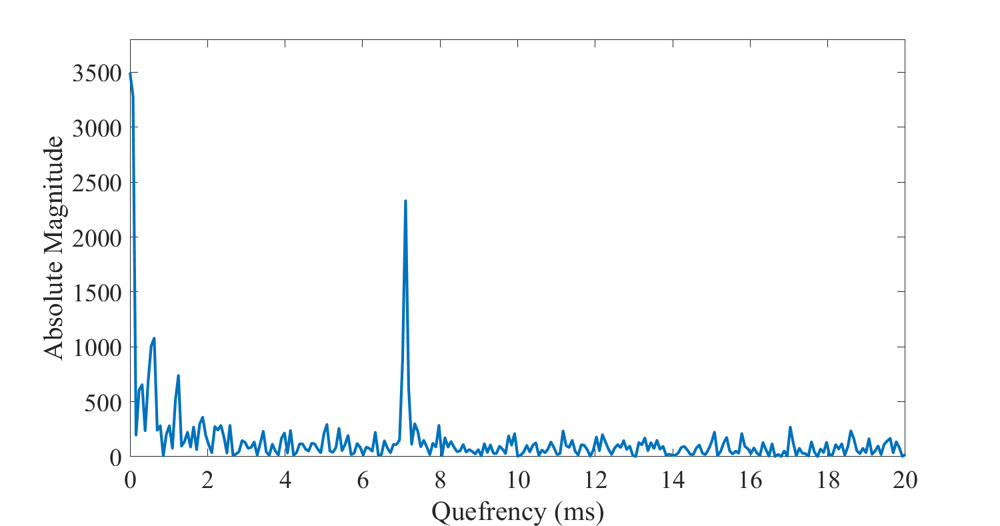
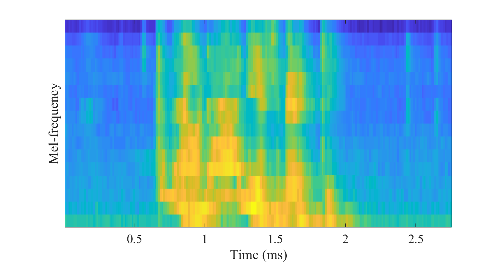

Cepstrum and MFCC
Contents
3.6. Cepstrum and MFCC¶
3.6.1. Motivation¶
Power spectra of windows of speech signals contain information about the most important features of speech signals like the identity of vowels. Unfortunately, the range of values is very non-uniform. In fact, by directly looking at power spectra, we do not really see anything informative.
The logarithmic spectrum, on the other hand, is a much more accessible representation. It is not only more visual, but importantly, the logarithm approximates roughly the sensitivity of the ear, such that logarithmic spectra can be used to assess auditory importance of spectral features. The logarithmic spectrum visualizes spectral content such that the magnitude of values is approximately uniform throughout the spectrum.
Windowed speech signal 
The only exception is zeros and other very small values in the magnitude spectrum, which give negative infinities or arbitrarily large negative values in the log spectrum. Though such values are “difficult” for visualizations, they are inconsequential for auditory perception and can be often ignored. However, for computations in the log-spectrum, arbitrarily large negative values are a problem.
To reduce the likelihood of such problematic values, we can use for example an energy bias similar to the mu-law rule or integrate energies over frequencies. Specifically, instead of \(y=\log(\|x\|^2)\), we can use \(y=\log(\|x\|^2+e)\), where \(e\) is a small positive number. The output \(y\) will then never go lower than a threshold \(y\geq \log(e)\).
In addition, we can integrate (or sum) neighboring frequencies, for example as
where 0<γ<1 is a scalar. The likelihood that all three coefficients, \(x_{k-1}\), \(x_{k}\) and \(x_{k+1}\), are all simultaneously near zero is much smaller than that one of them is near zero. The likelihood that \(y\) gets near the threshold \(y\geq \log(e)\) is therefore small. Such methods can be used to improve the robustness of log-spectra, such that we can make computations to them with reliable results.
Power spectrum of speech
segment 
3.6.2. The cepstrum¶
We now see that the log-spectrum has plenty of structure. It is a more or less continuous signal, owing to a large part, to the smoothing effect of windowing. In the illustration to the right, it has also a periodic structure, which corresponds to the harmonic structure of the signal caused by the fundamental frequency. Importantly, it has also a macro-level structure; by connecting the peaks of the harmonic structure, we see that the signal forms peaks and valleys, which correspond to the resonances of the vocal tract. These peaks are known as formants and they can be used to uniquely identify all vowels. They are therefore of particular interest. Capturing or quantifying such macro-level structures is important because of the connection with the vowel-identity.
One way of evaluating periodic structures in a signal on different scales is to use the Fourier transform. Specifically, we can take the discrete Fourier transform (DFT) or the discrete cosine transform (DCT) of the the log-spectrum, to obtain a representation known as the cepstrum. The name attempts to be an amusing reflection of the fact that this representation is a complicated rearrangement of time-frequency transforms. In technical terms, for a time signal \(x(t)\), the cepstrum is defined as
where \( {\mathcal {F}}\{\cdot\} \) represent the Fourier transform and \( {\mathcal {F}}^{-1}\{\cdot\} \) its inverse.
It is worth repeating that the cepstrum involves two time-frequency transforms. The cepstrum of a time-signal is therefore in some sense similar to the time-domain. The x-axis of a cepstrum is known as the *quefrency-*axis and it is expressed typically in the unit *seconds. *
In the cepstrum, the low quefrencies contain information about the slowly-changing features of the log-spectrum. That is, information of the formants will lie at the low-quefrency end of the cepstrum. Interpretation of formant information in the cepstrum is, however, non-trivial. For example, locations of the formants, on the frequency-axis, are encoded in the cepstrum, but the information is distributed over several coefficients such that extracting that information is not easy.
Log-spectrum of speech
segment 
Cepstrum of speech segment 
The most visually prominent feature in this cepstrum is the peak near quefrency 7 ms. It corresponds to a fundamental frequency of 1000/(7 s) = 143 Hz. That fundamental frequency is clearly visible also in the log-spectrum above, where the comb-structure has peaks at approximately multiples of 143 Hz.
A second useful piece of information in the cepstrum is the harmonic structure of the log-spectrum. Recall that the fundamental frequency is visible as a comb-structure in the log-spectrum. The comb-structure, in turn, is a periodic structure and the Fourier transform is an excellent tool for extracting such structures. We can thus expect to see a peak in the cepstrum at the quefrency corresponding to the pitch-period length (in seconds). If we assume that fundamental frequencies \(F_{0}\) are in the range 80 to 450 Hz, then the corresponding peak in the cepstrum should lie at quefrency \(1/F_{0}\) and they range from 2.2 to 12.5 milliseconds.
Estimating the fundamental frequency in the cepstrum is, in fact, very simple and relatively robust. We would just need to find the highest peak of the cepstrum in the appropriate quefrency-range. Fundamental frequency estimation will be discussed further in a separate section.
3.6.3. Mel-Frequency Cepstral Coefficients (MFCCs)¶
To further improve on the cepstral representation, we can include more information about auditory perception into the model. Specifically, by introducing information about human perception, we focus the model on that part of the information which human listeners would find important. The log-spectrum already takes into account perceptual sensitivity on the magnitude axis, by expressing magnitudes on the logarithmic-axis. The other dimension is then the frequency axis.
There exists a multitude of different criteria with which to quantify accuracy on the frequency scale and there are, correspondingly, a multitude of perceptually motivated frequency scales including the equivalent rectangular bandwidth (ERB) scale, the Bark scale, and the mel-scale. Probably through an abritrary choice mainly due to tradition, in this context we will focus on the mel-scale. This scale describes the perceptual distance between pitches of different frequencies.
A classical approximation is to define the frequency-to-mel transform function for a frequency \(f \) as
The inverse transform can be readily derived as
By taking equally spaced points \(m_{k}\), using the above formula, we can then find frequency points \(f_{k }\) whose perceptual distance is equal. In other words, to sample the log-spectrum with a perceptual scale, we pick samples at frequencies \(f_{k}\). (An implementation detail is that usually, we want to avoid that the distance between subsequent \(f_{k}\) would be smaller than the highest distance between harmonic peaks, such that the model focuses on the macro structure and ignores the fundamental frequency. Usually, a minimum threshold is therefore applied on \(f_{k}\).)
Mel scale

However, if we would only pick samples at frequencies \(f_{k}\), we would loose all the other information. Therefore, similarly as in the frequency-integration approach above, we take a weighted sum of energies near the target frequency \(f_{k}\) as
where scalars \(w_{k,h}\) are a weighting parameters. Then we get, simultaneously, the benefit of a robust estimate due to energy integration, but also apply a perceptual frequency scale.
Finally, by taking the discrete cosine transform (DCT) of the parameters \(u_{k}\), we obtain the representation known as *mel-frequency cepstral coefficients *(MFCCs). The benefit of the DCT at the end is to approximately decorrelate the signal, such that the MFC coefficients are not correlated with each other.
The weighting coefficients \(w_{k,h}\) are usually chosen as triangular functions as
The process of acquiring MFCCs from a spectrogram is illustrated on the right, where on the top, there is a triangular filterbank placed at linear steps on the mel-frequency scale. The second figure shows the spectrogram of a speech segment. When each window of that spectrogram is multiplied with the triangular filterbank, we obtain the mel-weighted spectrum, illustrated in the third figure. Here we see that the gross-shape of the spectrogram is retained, but the fine-structure has been smoothed out. In essence, this process thus removes the details related to the harmonic structure. Since the identity of phonemes such as vowels is determined based on macro-shapes in the spectrum, the MFCCs thus preserve that type of information and remove “unrelated” information such as the pitch.
The fourth figure illustrates the outcome once the mel-weighted spectrogram is multiplied with a DCT to obtain the final MFCCs. Where the mel-weighted spectrogram does retain the original shape of the spectrum, the MFCCs do not offer such easy interpretations. It is an abstract domain, which contains information about the spectral envelope of the speech signal.
Though the argumentation for the MFCCs is not without problems, it has become the most used feature in speech and audio recognition applications. It is used because it works and because it has relatively low complexity and it is straightforward to implement. Simply stated,
if you’re unsure which inputs to give to a speech and audio recognition engine, try first the MFCCs.
The beneficial properties of the MFCCs include:
Quantifies the gross-shape of the spectrum (the spectral envelope), which is important in, for example, identification of vowels. At the same time, it removes fine spectral structure (micro-level structure), which is often less important. It thus focuses on that part of the signal which is typically most informative.
Straightforward and computationally reasonably efficient calculation.
Their performance is well-tested and -understood.
Some of the issues with the MFCC include:
The choice of perceptual scale is not well-motivated. Scales such as the ERB or gamma-tone filterbanks might be better suited. However, these alternative filterbanks have not demonstrated consistent benefit, whereby the mel-scale has persisted.
MFCCs are not robust to noise. That is, the performance of MFCCs in presence of additive noise, in comparison to other features, has not always been good.
The choice of triangular weighting filters \(w_{k,h}\) is arbitrary and not based on well-grounded motivations. Alternatives have been presented, but they have not gained popularity, probably due to minor effect on outcome.
The MFCCs work well in analysis but for synthesis, they are problematic. Namely, it is difficult to find an inverse transform (from MFCCs to power spectra) which is simultaneously unbiased (=accurate) and congruent with its physical representation (=power spectrum must be positive).
Triangular filterbank \(w_{k,h}\)

Spectrogram of a segment of speech

Spectrogram after multiplication with mel-weighted filterbank 
Corresponding MFCCs